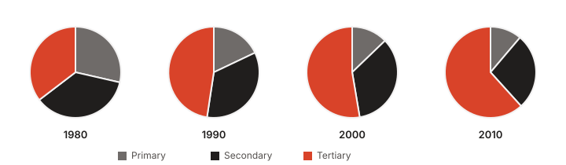
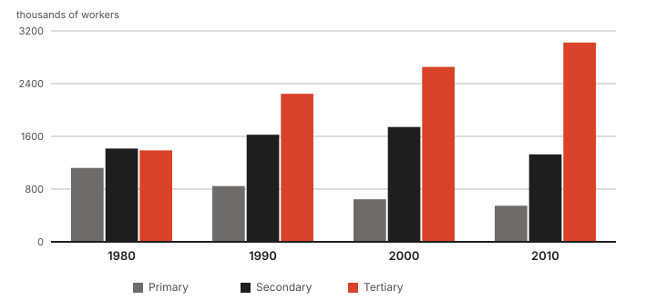
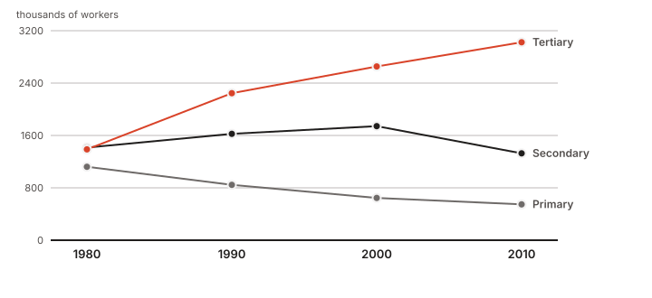

This first appeared in December 2016 on the old novathesis blog. Ten years later it still answers the question I am asked most often about presenting results, so here it is again — with the charts redrawn and, at the end, what the intervening years have added.
The question
Should I present my data as a chart or as a table?
It depends on the objective. But how, exactly? Over the years I have seen countless results presented in tables that belonged in charts. Rarely the other way round.
If what you want to show is an order of magnitude, a variation, a trend, then a chart is the better choice. A good chart leaves out the detail and states the message clearly. If, on the other hand, the exact values really matter, then a table is the answer.
Suggestion: always try to present results as a chart. Done well, they are usually easier to read and to understand than tables.
Ten seconds with a table
The table below gives the distribution of the Portuguese working population by sector of activity, in thousands of workers. What can you take from it in ten seconds?
| Year | Primary | Secondary | Tertiary |
|---|---|---|---|
| 1980 | 1121.0 | 1415.0 | 1388.0 |
| 1990 | 845.6 | 1624.6 | 2245.2 |
| 2000 | 645.2 | 1741.7 | 2654.4 |
| 2010 | 548.1 | 1327.3 | 3023.0 |
Probably very little.
The same information as a chart
{kind=link}

Now something does come through:
- In 1980 the three sectors were fairly evenly balanced.
- Between 1980 and 2010 the primary and secondary sectors lost weight to the tertiary.
But other questions remain hard, or outright impossible:
- The 1980 split was surely not one third each. Which sector had the most workers, and which the fewest?
- The tertiary sector grew — but is 2010 double what it was in 1980?
- And in 1990, was the secondary sector double the primary?
- In absolute terms, were there more people in the secondary sector in 1980 or in 2010?
Choosing the right kind of chart is what matters
{kind=link}

Back to the questions:
- Most and fewest in 1980? From smallest to largest: primary, tertiary, secondary.
- Did the tertiary sector double? Marginally more than that: in 1980 it sits visibly below 1500, and in 2010 it reaches 3000.
- Was the secondary double the primary in 1990? Almost: a little over 1600 against a little over 800.
- More or fewer in the secondary sector, 1980 or 2010? Clearly fewer in 2010.
In short: do not use pie charts. Bars and lines are nearly always easier to read and more informative.
Bars or lines?
{kind=link}

The line chart answers exactly the same questions as the bar chart, and makes the trends easier to read off. But use it only when the variable on the horizontal axis is continuous — time, length, area, volume. When that domain is discrete — colours, towns, schools — use bars.
Ten years later
Four notes I would add today to the 2016 text.
The third question does have an answer. In 2016 I wrote that the bar chart could not tell us whether the secondary sector was double the primary in 1990. It could — it only needed gridlines. What the example really shows is not "bars beat pies" but something more general: a chart answers the questions it has a scale for. Without a graduated axis, any chart is back to being a vague impression.
The pie chart is not bad by fashion. It is bad because it asks us to compare angles and areas, and we are poor at that. Comparing lengths aligned on a common baseline — bars — is the comparison we are best at. That is why the recommendation has not aged.
Colour cannot be the only code. Around 8% of men have some colour-vision deficiency, and plenty of theses are still printed in black and white. The charts above separate the series by lightness as well as hue, and each series carries both a legend entry and a direct label. Print your chart in greyscale before you hand it in: if it stops making sense, the problem is not the printer.
Keep charts in vector form. A PDF or SVG stays sharp at any magnification and in any print run; a PNG or JPEG is blurry for ever. These charts are SVG — click any of them for the original file. The 2016 ones were JPEGs 400 pixels wide, which is exactly why I redrew them instead of copying them across.